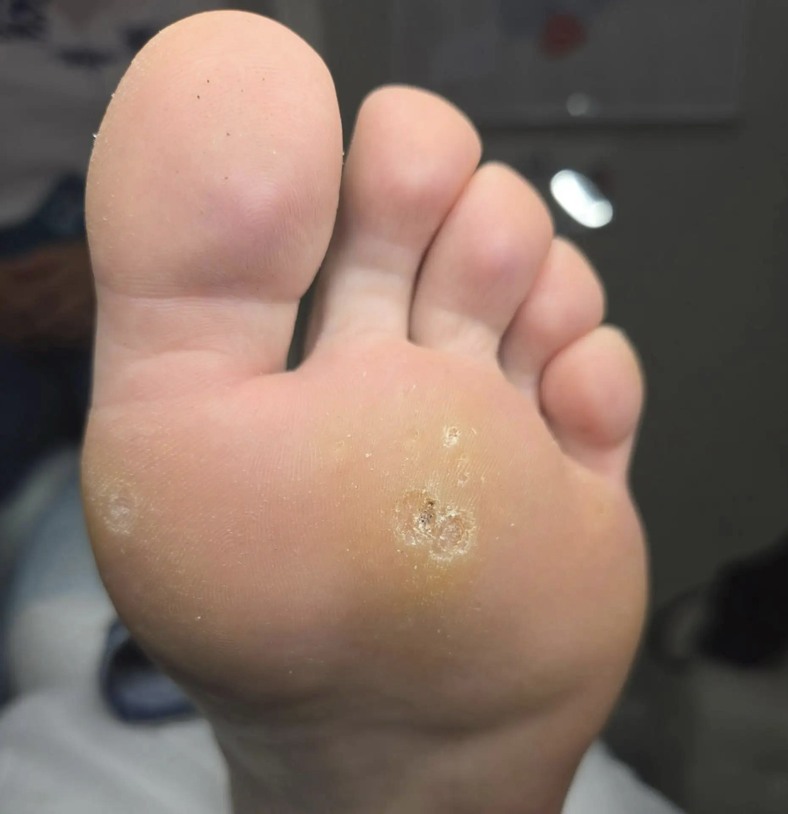

Обработка кожи стопы при бородавках
Подошвенные бородавки — это доброкачественные образования на коже стопы, связанные с вирусом папилломы человека (ВПЧ). На стопах такие образования могут доставлять дискомфорт при ходьбе и создавать дополнительное давление на окружающие ткани, особенно если находятся в местах постоянной нагрузки.
Они нарушают эстетический вид, а кроме того, без устранения и профилактических мер могут разрастаться, увеличиваться в размерах и появляться в большом количестве. При этом заразиться ими максимально просто: достаточно одного касания, использования общих предметов или других взаимодействий с заражённым или носителем.
В обычном состоянии вирус папилломы находится в организме от 6 до 12 месяцев без малейших проявлений и далее выводится.
Появление бородавок может свидетельствовать об ослабленном иммунитете и говорить о наличии других более серьёзных патологий.
Этапы профессиональной обработки
Специалист - подолог аккуратно работает с проблемным участком кожи стопы, уделяя внимание самому образованию и окружающей его зоне.
- Осмотр. Специалист - подолог тщательно осматривает образование, оценивает его размер, глубину, состояние окружающей кожи и характер нагрузки на стопу.
- Аккуратная зачистка. Подолог снимает лишнее ороговение так, чтобы уменьшить давление и не травмировать здоровую кожу.
- Оценка образования. После зачистки становится понятнее, похоже ли это на бородавку, мозоль или смешанную проблему.
- Разгрузка и домашние рекомендации. Если зона перегружена, подолог может предложить разгрузку и подсказать, как снизить давление в обуви.
Способ обработки подбирается индивидуально с учётом расположения образования, состояния кожи и особенностей стопы.
Специалист может рекомендовать обратиться к дерматологу для дальнейшего лечения.
Примеры работ
Нажмите «Показать», чтобы посмотреть фотографии полностью.

Запишитесь на приём
Оставьте заявку — мы свяжемся с вами и подберём удобное время.